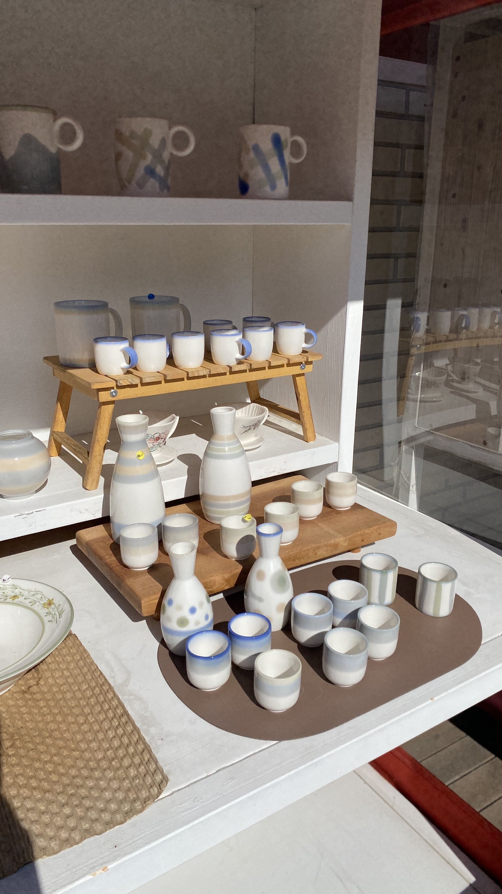

☆ 도자 예술맵 0 / 3▣ 실시간 카메라
안내판 QR을 네모 안에 맞춰주세요
선택한 장소의 현장 안내판 QR 코드를 화면 사각형 안에 맞춰주세요.
현재 퀘스트
다음 장소
사기막골도예촌
전통 가마와 도예 작업 풍경을 만나는 이천의 도자 문화 공간이에요.
🅿주차 안내: 도예촌 인근 주차 공간 · 만차 시 현장 안내를 우선 확인
👨👩👧 유모차·화장실 위치는 현장 안내판을 확인하세요.
사기막골도예촌
현장 퀘스트◉
미션 목표
전통 가마 입구에 숨은 도자기 흙도장 문양 찾기
인식이 잘 안 되거나 다른 장소인가요?순서 확인 및 친절한 안내 가이드